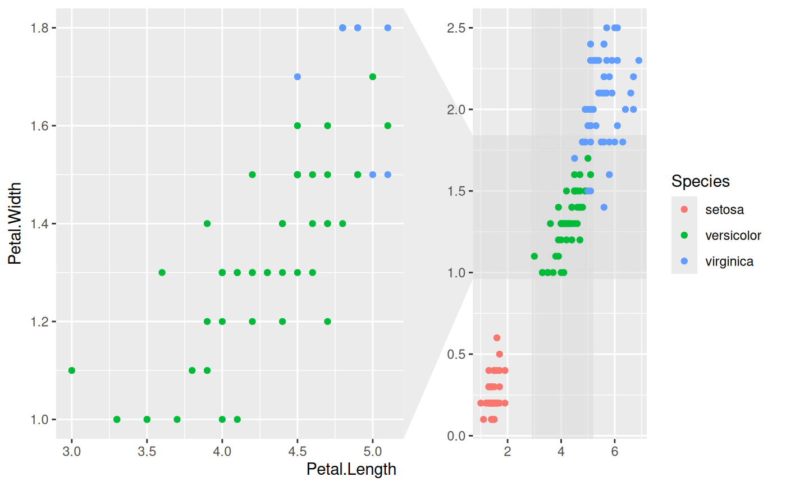

This facetting provides the means to zoom in on a subset of the data, while keeping the view of the full dataset as a separate panel. The zoomed-in area will be indicated on the full dataset panel for reference. It is possible to zoom in on both the x and y axis at the same time. If this is done it is possible to both get each zoom separately and combined or just combined.
Usage
facet_zoom(
x,
y,
xy,
zoom.data,
xlim = NULL,
ylim = NULL,
split = FALSE,
horizontal = TRUE,
zoom.size = 2,
show.area = TRUE,
shrink = TRUE
)Arguments
- x, y, xy
An expression evaluating to a logical vector that determines the subset of data to zoom in on
- zoom.data
An expression evaluating to a logical vector. If
TRUEthe data only shows in the zoom panels. IfFALSEthe data only show in the context panel. IfNAthe data will show in all panels.- xlim, ylim
Specific zoom ranges for each axis. If present they will override
x,y, and/orxy.- split
If both
xandyis given, should each axis zoom be shown separately as well? Defaults toFALSE- horizontal
If both
xandyis given andsplit = FALSEHow should the zoom panel be positioned relative to the full data panel? Defaults toTRUE- zoom.size
Sets the relative size of the zoom panel to the full data panel. The default (
2) makes the zoom panel twice the size of the full data panel.- show.area
Should the zoom area be drawn below the data points on the full data panel? Defaults to
TRUE.- shrink
If
TRUE, will shrink scales to fit output of statistics, not raw data. IfFALSE, will be range of raw data before statistical summary.
See also
Other ggforce facets:
facet_grid_paginate(),
facet_stereo(),
facet_wrap_paginate()
Examples
# Zoom in on the versicolor species on the x-axis
ggplot(iris, aes(Petal.Length, Petal.Width, colour = Species)) +
geom_point() +
facet_zoom(x = Species == 'versicolor')
# Zoom in on versicolor on both axes
ggplot(iris, aes(Petal.Length, Petal.Width, colour = Species)) +
geom_point() +
facet_zoom(xy = Species == 'versicolor')

# Use different zoom criteria on each axis
ggplot(iris, aes(Petal.Length, Petal.Width, colour = Species)) +
geom_point() +
facet_zoom(x = Species != 'setosa', y = Species == 'versicolor')
 # Get each axis zoom separately as well
ggplot(iris, aes(Petal.Length, Petal.Width, colour = Species)) +
geom_point() +
facet_zoom(xy = Species == 'versicolor', split = TRUE)
# Get each axis zoom separately as well
ggplot(iris, aes(Petal.Length, Petal.Width, colour = Species)) +
geom_point() +
facet_zoom(xy = Species == 'versicolor', split = TRUE)
 # Define the zoom area directly
ggplot(iris, aes(Petal.Length, Petal.Width, colour = Species)) +
geom_point() +
facet_zoom(xlim = c(2, 4))
# Define the zoom area directly
ggplot(iris, aes(Petal.Length, Petal.Width, colour = Species)) +
geom_point() +
facet_zoom(xlim = c(2, 4))
 # Selectively show data in the zoom panel
ggplot(iris, aes(Petal.Length, Petal.Width, colour = Species)) +
geom_point() +
facet_zoom(x = Species == 'versicolor', zoom.data = Species == 'versicolor')
# Selectively show data in the zoom panel
ggplot(iris, aes(Petal.Length, Petal.Width, colour = Species)) +
geom_point() +
facet_zoom(x = Species == 'versicolor', zoom.data = Species == 'versicolor')